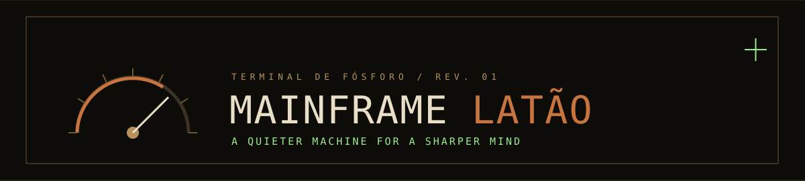
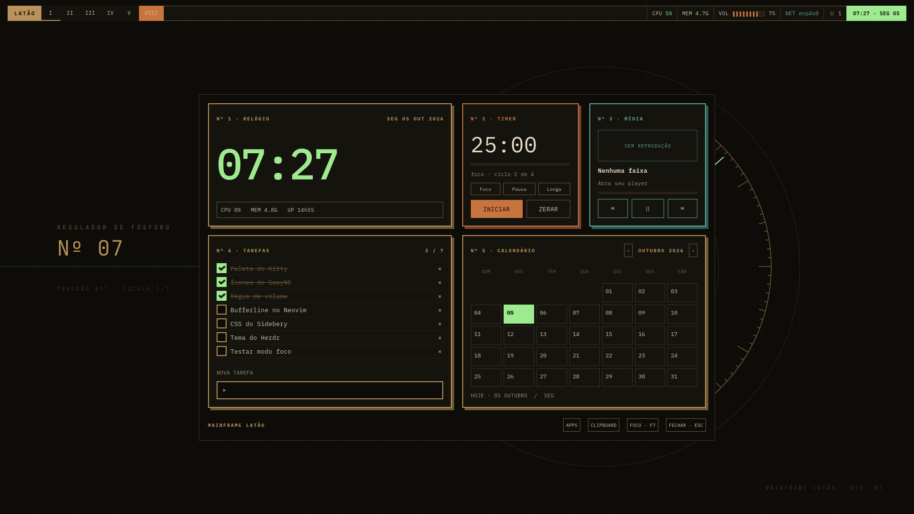
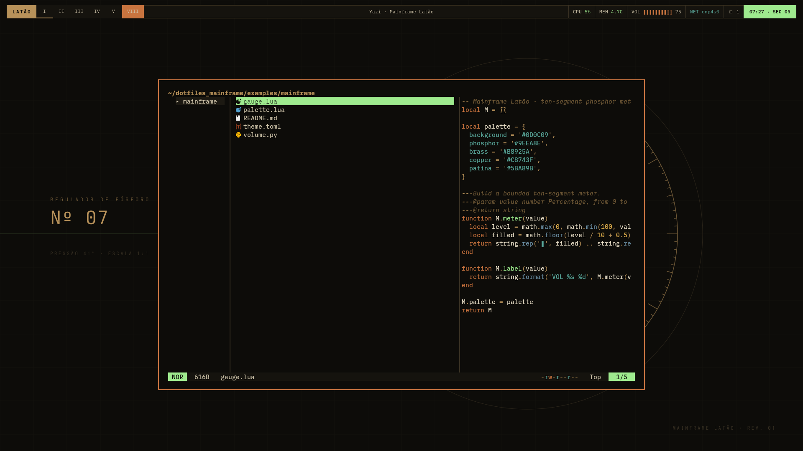
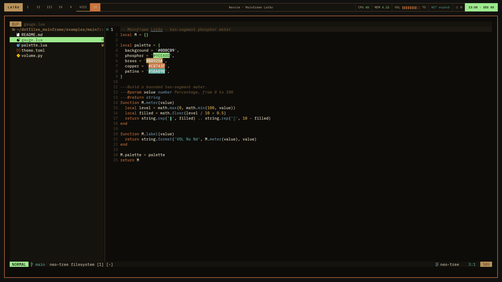
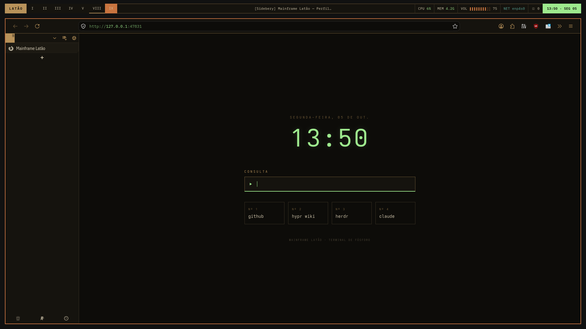
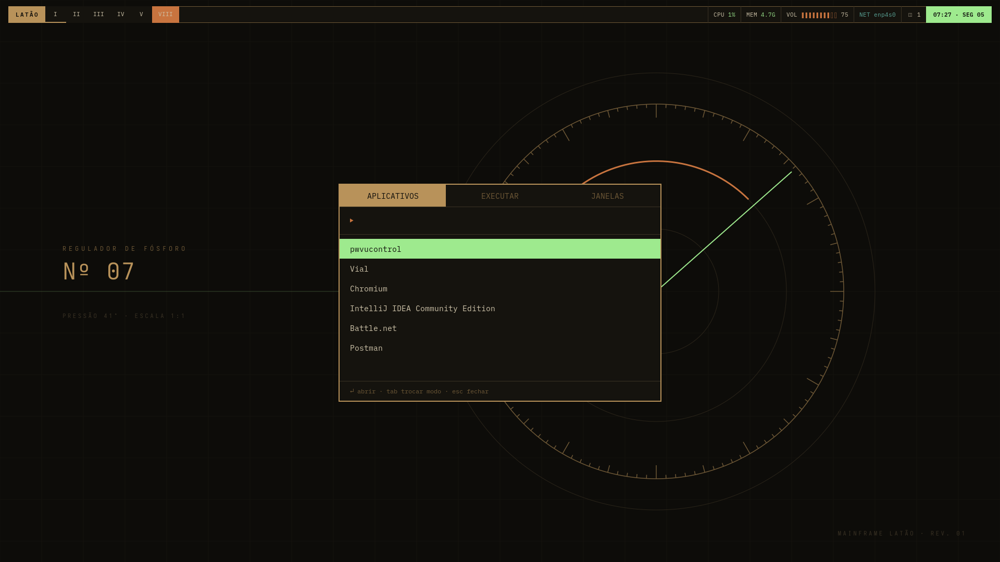
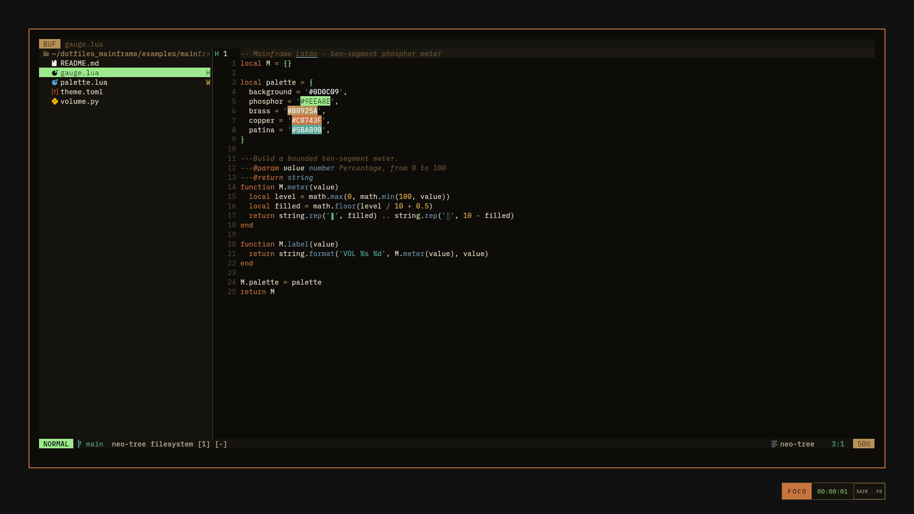
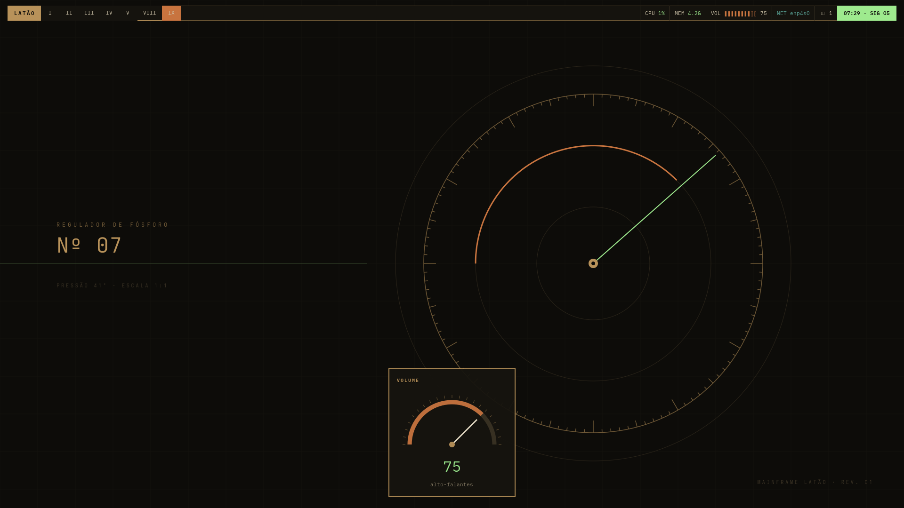

Terminal de fósforo / rev. 01
MAINFRAME LATÃO
A brass-and-phosphor desktop for deliberate work. An analog instrument language carried across an entire Hyprland session.

32-inch reference display · 1920 × 1080 · scale 1
01 / The command desk
Signals within reach.
A live clock and system readings sit beside a Pomodoro timer, media controls, persistent tasks and a navigable calendar. The sample tasks in this capture are isolated from the user's data.
GTK 3 dashboard / real Wayland capture

02 / Navigation
Find the next thing.
Yazi brings phosphor selection, brass directories, copper search, a square status line and matching code previews into a compact floating scratchpad.
1160 × 740 logical pixels

03 / Creation
A quieter editor.
Neovim uses a native colorscheme, rectangular buffer tabs and a Lualine palette that keep syntax visible without visual noise. Regular application windows tile with fine gaps.
IBM Plex Mono / Neovim

04 / Research
A clean place to begin.
Firefox and Sidebery frame a local page with a live clock, search and direct links. The page is served on the workstation's loopback address.
Firefox / Sidebery / local homepage

05 / Control
Keyboard first.
Rofi, Waybar and SwayNC share the same hierarchy: brass structure, copper action, green selection. The launcher keeps its footprint small even on a large display.
Super + Space / launcher

06 / Focus
Open a little space.
F8 keeps windows tiled while widening the margins, hiding Waybar, enabling do-not-disturb and placing an elapsed-time HUD in its own lower strip. Yazi can rest in the upper-left gap.
F8 / tiled focus mode

07 / Materials
Brass. Copper. Phosphor.
The interface is built from opaque near-black planes, two-pixel rules and square corners. The color hierarchy stays consistent from browser to terminal and from file manager to volume gauge.
